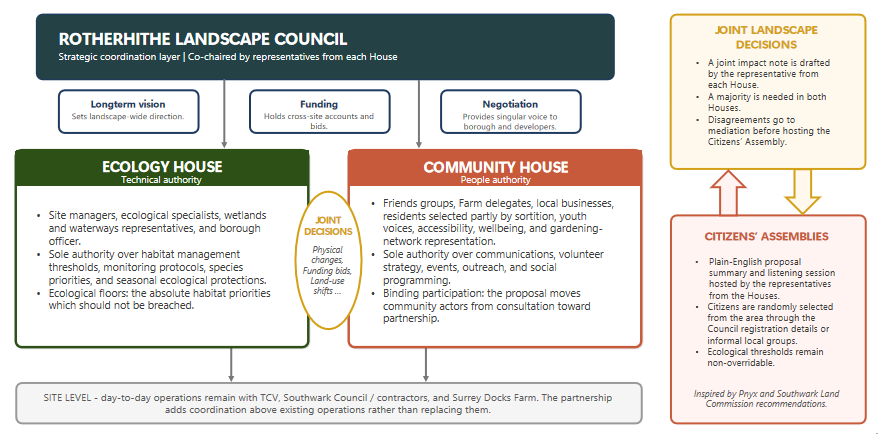
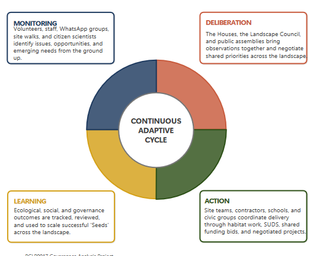
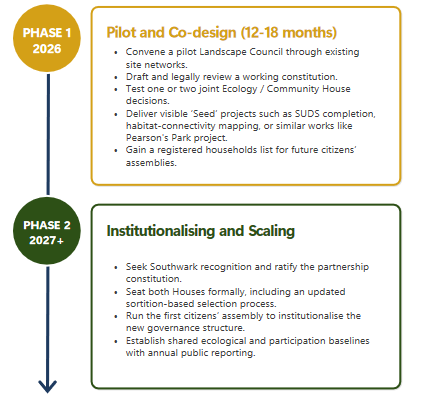

Why governance matters here
These sites are connected by ecology, hydrology, pedestrian continuity, and overlapping forms of civic stewardship. Yet they are still often managed as separate places. The governance project asks how to preserve existing stewardship while creating a more formal landscape-scale system for coordination, funding, and democratic participation.
The key challenge is not how to replace current stewards, but how to connect them more effectively while giving community actors a real role in shaping shared priorities across the whole landscape.
The current governance problem
The presentation identifies three critical governance deficits across the Rotherhithe eco-landscape. These are not simply technical problems. They are institutional problems linked to fragmented decision-making, weak community power, and the absence of a formal body operating at landscape scale.
Fragmented decision-making
Multiple contacts and informal coordination routes exist, but there is no shared forum that aligns funding, priorities, and timing across the whole landscape.
Consultation without power
Friends groups and local actors can express concerns and debate priorities, but budgets, design choices, and delivery timelines often remain elsewhere.
No landscape-scale planning body
There is no formal mechanism to allocate cross-site funding, coordinate developer negotiations, or respond collectively to climate and growth pressures.
In short: participation is often heard, but not binding. Existing stewards remain active, but too often in institutional isolation.
Theoretical framework
The governance model is built on three linked ideas. Commons governance provides an institutional structure, deliberative democracy gives the community real voice, and the “Seeds of Good Anthropocene” perspective frames local initiatives as experiments that can be protected, connected, and scaled.
Commons governance
Treats the ecological landscape as a shared resource requiring collective rules, stewardship, and long-term care rather than fragmented control.
Deliberative democracy
Moves beyond consultation by creating formal spaces in which community actors can influence, debate, and shape collective decisions.
Seeds of Good Anthropocene
Recognises local projects and stewardship practices as small but important “seeds” that can support wider transformation when they are connected, protected, and institutionalised.
Why this matters at Rotherhithe: existing site management can stay in place, but the landscape tier becomes formal, community voice becomes more binding, and local ecological and social experiments become easier to scale.
The proposed Twin-House governance model
The core proposal is the creation of a Rotherhithe Eco-Landscape Partnership built around a Twin-House governance architecture. The model is designed to keep local management in place while adding a landscape-scale structure that combines ecological coordination with community power.
Ecology House
- Coordinates landscape-scale ecological priorities.
- Supports habitat management, monitoring, and technical planning across sites.
- Provides a shared ecological voice in negotiations, funding, and adaptation strategy.
- Helps link separate sites into one coherent ecological landscape.
Community House
- Brings together Friends groups, residents, volunteers, and community organisations.
- Creates a more formal route for community participation and co-decision.
- Ensures local priorities are not merely advisory but institutionally recognised.
- Strengthens civic stewardship and democratic legitimacy across the landscape.

Twin-House governance architecture
The partnership model keeps existing stewards in place, but adds a formal landscape-scale layer that connects technical ecology and community governance instead of leaving them institutionally separate.
How the framework operates
The PPT proposes a practical operating cycle: Monitor – Deliberate – Act – Learn. This means governance is not treated as a fixed one-off plan, but as a repeated process of evidence, discussion, action, and adaptation.
Monitor
Build a shared evidence base across sites, including ecological change, public use, and landscape pressures.
Deliberate
Use formal discussion spaces to compare priorities, resolve tensions, and make decisions with both ecological and community input.
Act
Deliver coordinated projects, funding decisions, or management responses at landscape scale rather than site by site.
Learn
Review outcomes, learn across sites, and adapt the framework over time instead of freezing it in one institutional form.

Monitor – Deliberate – Act – Learn
The proposed governance framework is intentionally adaptive. It treats coordination as an ongoing cycle rather than a single administrative fix.
Implementation strategy
The presentation proposes a phased implementation pathway with built-in adaptation. This reflects the idea that governance reform should not be imposed all at once, but introduced gradually, tested, and refined through practice.
Build the partnership structure
Establish the shared landscape platform and define how the ecology and community houses relate to existing stewards and institutions.
Test coordination in practice
Begin using the framework to align priorities, coordinate responses across sites, and improve communication around funding and delivery.
Adapt and institutionalise
Review what works, strengthen useful mechanisms, and gradually translate successful coordination into more stable long-term practice.

Phased implementation with adaptation
The framework is designed to evolve. Its purpose is to move from informal fragmentation towards practical and empowered landscape governance.
What the framework could improve
The conclusion of the PPT sets out a series of ecological, governance, social, and strategic benefits that could follow from the framework. The goal is not centralisation for its own sake, but a more coherent, democratic, and resilient form of stewardship.
Ecological benefits
Better habitat coordination, stronger monitoring, improved climate adaptation, and new opportunities for biodiversity-related funding.
Governance benefits
A clearer ecological interlocutor, more transparent funding choices, stronger conflict-resolution routes, and greater negotiating capacity.
Social benefits
Better volunteer coordination, more equitable representation, stronger wellbeing and food-growing links, and a more accessible public landscape.
Strategic benefits
A practical way to connect local seeds, learn across sites, and translate broad policy commitments into workable institutions.
Key takeaway
The central message is simple: Rotherhithe’s commons should be governed with communities, not merely for communities. Existing stewards should continue managing their sites, but no longer in isolation. A landscape-scale partnership can make ecological coordination more coherent while giving community actors more meaningful power over shared priorities.